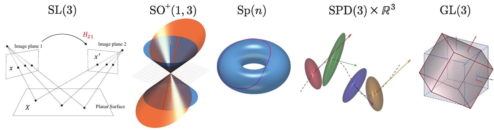
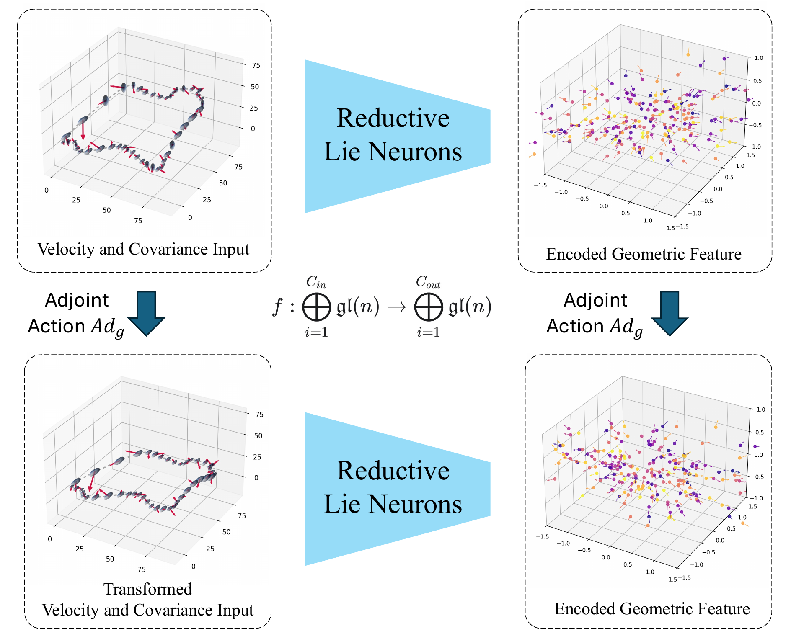
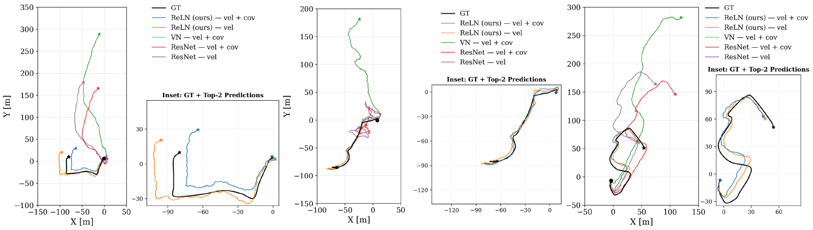
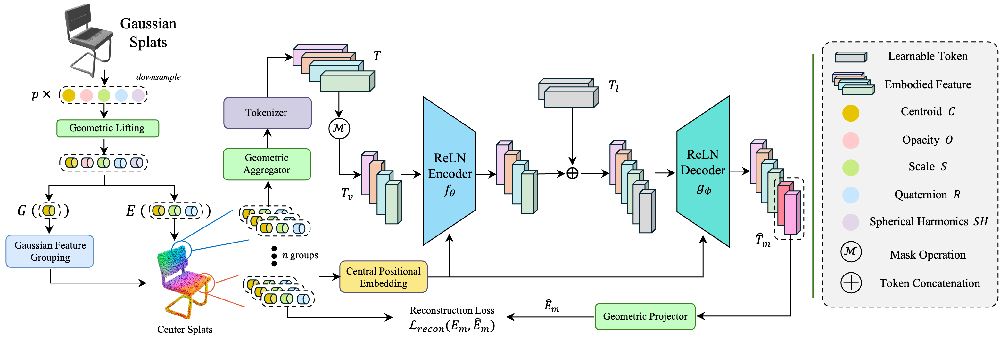
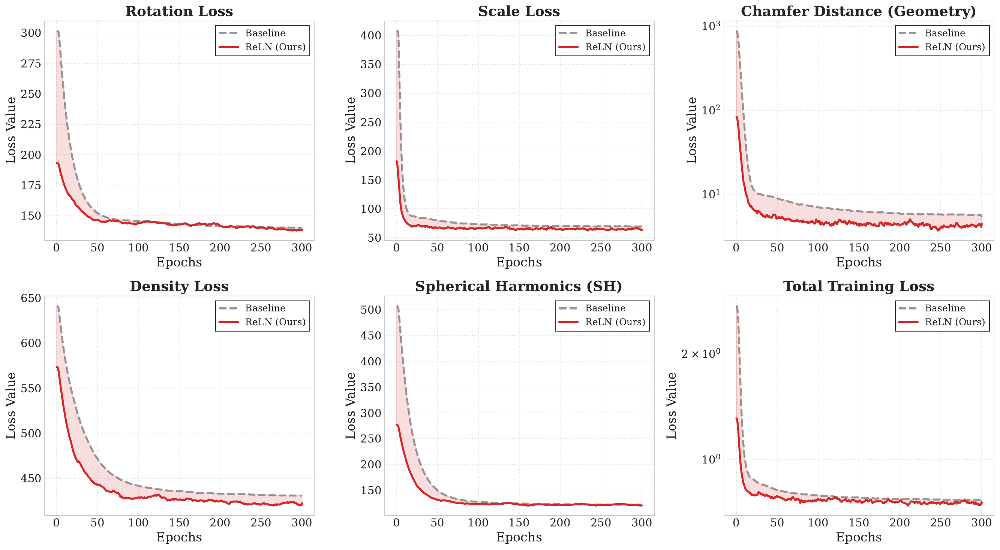

Reductive Lie Neurons (ReLNs)

One backbone, many symmetries. From image homographies ($\mathrm{SL}(3)$) and spacetime physics (the Lorentz group $\mathrm{SO}^+(1,3)$) to Hamiltonian mechanics ($\mathrm{Sp}(n)$), probabilistic state estimation ($\mathrm{SPD}(3)\times\mathbb{R}^3$), and continuum mechanics ($\mathrm{GL}(3)$) — these symmetries span the spectrum that a single adjoint-equivariant ReLN backbone is designed to address, with no per-subgroup redesign.
TL;DR
Many scientific and geometric problems exhibit general linear symmetries, yet most equivariant neural networks are built for compact groups or simple vector features, limiting their reuse on matrix-valued data such as covariances, inertias, or shape tensors. We introduce Reductive Lie Neurons (ReLNs), an exactly $\mathrm{GL}(n)$-equivariant architecture that natively supports matrix-valued and Lie-algebraic features.
ReLNs resolve a central stability issue for reductive Lie algebras by introducing a non-degenerate adjoint (conjugation)-invariant bilinear form, enabling principled nonlinear interactions and invariant feature construction in a single architecture that transfers across subgroups without redesign. We demonstrate ReLNs on native $\mathrm{GL}(n)$ system identification, algebraic tasks with $\mathfrak{sl}(3)$ and $\mathfrak{sp}(4)$ symmetries, uncertainty-aware drone state estimation via joint velocity–covariance processing, learning from 3D Gaussian-splat representations, and an EMLP double-pendulum benchmark spanning multiple symmetry groups. ReLNs consistently match or outperform strong equivariant and self-supervised baselines while using substantially fewer parameters and compute, providing a practical, reusable backbone for learning with broad linear symmetries.
Positioning
Prior equivariant networks are typically specialized for subgroups such as $\mathrm{SO}(n)$, $\mathrm{E}(n)$, or $\mathrm{SL}(n)$. ReLNs target the full general linear group $\mathrm{GL}(n)$ — subsuming these families under one adjoint-equivariant construction.
Method
Heterogeneous geometric inputs obey different transformation laws — vectors transform by a left action ($v \mapsto Rv$), while covariances transform by congruence ($\Sigma \mapsto R\Sigma R^\top$). ReLNs embed both into a shared Lie algebra $\mathfrak{gl}(n)$, where they share a single adjoint action $\mathrm{Ad}_g$ that the network $f$ commutes with — equivariance by construction.

Velocity and covariance are lifted into a common $\mathfrak{gl}(n)$ feature space and transform under the same $\mathrm{Ad}_g$. The ReLN map $f$ commutes with this action: $f(\mathrm{Ad}_g \cdot x) = \mathrm{Ad}_g \cdot f(x)$.
The key ingredient is a non-degenerate, $\mathrm{Ad}$-invariant bilinear form for any reductive matrix algebra (e.g. $\mathfrak{gl}(n)$), which resolves the degeneracy of the classical Killing form and underlies every ReLN gating, normalization, and invariant layer:
Invariant under conjugation by any $g \in \mathrm{GL}(n)$, this form generalizes the trace/Killing form (degenerate on $\mathfrak{gl}(n)$) and yields stable invariant scalars for nonlinearities.
Results
A single ReLN backbone transfers across tasks with no per-symmetry redesign. Its advantage is largest where features carry geometric structure that changes with the frame — covariance, uncertainty, and scale — information that semisimple equivariant models discard.
The one task whose symmetry is genuinely the full general linear group. We recover an unknown linear dynamics matrix $A\in\mathfrak{gl}(3)$ of a system $z_{t+1}=Az_t$ from noisy windowed least-squares estimates. Under a latent basis change $z\mapsto Sz$ with $S\in\mathrm{GL}(3)$, both inputs and target transform by similarity $A\mapsto SAS^{-1}$ — the adjoint action on $\mathfrak{gl}(3)$. Crucially, $\mathrm{Tr}(A)$ governs global expansion/contraction and lives in the center, so recovering $A$ needs both the semisimple ideal and the center. Lie Neurons rely on Killing-form-only invariants that are blind to $\mathrm{Tr}(A)$ by construction; ReLN's reductive completion recovers it while staying similarity-equivariant.
| Method | Test split | Trace MSE ↓ | Canonical MSE ↓ |
|---|---|---|---|
| Baselines | |||
| Avg-LS | all | 0.0211 | 0.0044 |
| MLP | ID | 0.0145 | 0.0041 |
| MLP | GL | 0.0489 | 0.1480 |
| MLP | GL-Hard | 1.0285 | 57.41 |
| Lie Neurons | all | 1.6850 | 0.0658 |
| Reductive Lie Neurons (Ours) | |||
| ReLN | all | 0.0133 | 0.0039 |
Mean over 3 seeds. Trace MSE measures center recovery; Canonical MSE measures intrinsic, similarity-invariant error. Equivariant methods (Avg-LS, Lie Neurons, ReLN) report a single value because they are exactly similarity-equivariant; the non-equivariant MLP is shown across ID (training basis), GL (random $S$), and GL-Hard (ill-conditioned $S$), and collapses under unseen basis changes. Lie Neurons is stable in Canonical MSE but its Trace MSE is two orders of magnitude worse than ReLN ($1.685$ vs. $0.013$). ReLN attains the lowest error on both metrics simultaneously.
Reconstructing 3D trajectories from noisy velocities $\mathbf{v}\in\mathbb{R}^3$ and time-varying uncertainty covariances $C\in\mathrm{SPD}(3)$ requires jointly processing vector and matrix data. ReLNs lift both into a common $\mathfrak{gl}(3)$ representation; the variant using log-covariance is best, and ReLNs are exactly invariant to test-time $\mathrm{SO}(3)$ rotations (identical ID and SO(3) metrics).

On challenging aggressive trajectories, ReLN variants track the ground truth (black), while the ResNet and Vector-Neuron baselines shown here drift.
| Model | Input | In-Distribution | SO(3) perturbed | ||
|---|---|---|---|---|---|
| ATE ↓ | RTE ↓ | ATE ↓ | RTE ↓ | ||
| Non-Equivariant | |||||
| ResNet | $(v, C)$ | 205.11 | 106.07 | 213.26 | 109.37 |
| Equivariant Baselines | |||||
| VN | $v$ | 17.36 | 13.51 | 17.36 | 13.51 |
| VN | $(v, C)$ | 191.78 | 98.39 | 190.22 | 98.26 |
| TFN | $(v, C)$ | 17.56 | 14.40 | 17.56 | 14.40 |
| TFN | $(v, \log C)$ | 16.83 | 13.34 | 16.83 | 13.34 |
| SE(3)-Transformer | $(v, C)$ | 21.67 | 16.77 | 21.67 | 16.77 |
| SE(3)-Transformer | $(v, \log C)$ | 20.12 | 15.36 | 20.12 | 15.36 |
| Lie Neurons | $(v, C)$ | 16.86 | 13.65 | 16.86 | 13.65 |
| Lie Neurons | $(v, \log C)$ | 15.65 | 12.04 | 15.65 | 12.04 |
| Reductive Lie Neurons (Ours) | |||||
| ReLN | $v$ | 16.85 | 12.70 | 16.85 | 12.70 |
| ReLN | $(v, C)$ | 16.49 | 13.02 | 16.49 | 13.02 |
| ReLN | $(v, \log C)$ | 13.92 | 11.04 | 13.92 | 11.04 |
Absolute / relative trajectory error in meters (lower is better). For a fair comparison, the steerable baselines (TFN, SE(3)-Transformer) and Lie Neurons are given the same log-covariance interface; ReLN still attains the lowest error. ResNet and VN are reported with their native inputs (non-equivariant; eigendecomposition-based covariance interface).
3D Gaussian splats couple a mean $\mu\in\mathbb{R}^3$ with an anisotropic covariance $\Sigma\in\mathrm{SPD}(3)$ that transform differently under rotation ($R\mu$ vs. $R\Sigma R^\top$). We rebuild the encoder/decoder of a Gaussian masked-autoencoder with ReLN blocks to enforce $\mathrm{GL}(3)$-equivariance. The result: classification accuracy on ModelNet10 stays stable under arbitrary rotations where the baseline collapses, with faster convergence and lower reconstruction error across every attribute.

The ReLN-integrated Gaussian-MAE lifts raw splats into $\mathfrak{gl}(3)$, processes active geometry ($\mu,\Sigma$) through a $\mathrm{GL}(3)$-equivariant encoder/decoder, and reconstructs via the Vee map and bilinear form.
| Method | Standard ↑ | Rotated ↑ |
|---|---|---|
| Gaussian-MAE | 93.39 | 18.28 |
| ReLN (Ours) | 94.82 | 95.15 |
ModelNet10 accuracy (%). The baseline drops to 18% under random rotations; ReLN stays at 95%.

Pre-training on ShapeNet: ReLN (red) reaches lower reconstruction error than the baseline across rotation, scale, density, SH, and Chamfer distance.
On the EMLP double-pendulum benchmark (Hamiltonian dynamics under $O(2)$, $SO(2)$, $D_6$), ReLN matches or beats EMLP without any group-specific architecture changes, while running an order of magnitude cheaper. ReLN uses closed-form matrix operations from exact $\mathrm{Ad}$-equivariant primitives, whereas EMLP relies on symmetry-dependent basis construction.
| Rollout Error ↓ | EMLP | ReLN |
|---|---|---|
| $O(2)$ | 0.012 | 0.011 |
| $SO(2)$ | 0.015 | 0.010 |
| $D_6$ | 0.013 | 0.011 |
| Cost / step | EMLP | ReLN |
|---|---|---|
| FLOPs | 1,589,909 | 142,190 |
| Inference (ms) | 61.64 | 2.22 |
ReLN: 11.2× fewer FLOPs and 27.8× faster inference than EMLP at matched accuracy.
As a sanity check that the general $\mathfrak{gl}(n)$ construction specializes correctly to semisimple subalgebras, ReLN matches the specialized Lie Neurons on Platonic-solid classification ($\mathfrak{sl}(3)$, near-perfect rotated-camera accuracy) and on $\mathfrak{sp}(4)$ invariant-function regression (low MSE and near-zero invariance error) — while keeping a single, unified architecture across all algebras.
@inproceedings{kim2026equivariant,
title = {Equivariant Neural Networks for General Linear Symmetries on Lie Algebras},
author = {Kim, Chankyo and Zhao, Sicheng and Zhu, Minghan and Lin, Tzu-Yuan and Ghaffari, Maani},
booktitle = {Forty-third International Conference on Machine Learning},
year = {2026}
}